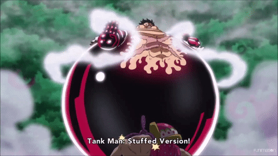

About:

Monkey D. Luffy is the fearless and spirited protagonist of the renowned manga and anime series, "One Piece," created by Eiichiro Oda. Born on May 5th, 1997, Luffy hails from the fictional East Blue region of the One Piece world. His journey began when he consumed the legendary Devil Fruit known as the Gum-Gum Fruit, granting him the extraordinary ability to stretch his body like rubber. This power, however, came with a cost, rendering him unable to swim, a significant handicap in a world dominated by vast oceans.
Despite this limitation, Luffy's determination and unyielding spirit drive him forward as he aspires to become the Pirate King. His infectious enthusiasm and unwavering loyalty to his friends have earned him a crew of diverse and formidable allies, collectively known as the Straw Hat Pirates. Along his adventurous odyssey, Luffy encounters numerous adversaries and faces perilous challenges, all while pursuing his ultimate goal of discovering the fabled One Piece treasure and claiming the title of the greatest pirate in the world. With his boundless optimism, indomitable willpower, and boundless capacity for friendship, Luffy continues to inspire fans worldwide as he sails the Grand Line in search of legendary adventures and untold riches.
Powers:
Luffy's powers stem from consuming the Gum-Gum Fruit, granting him a rubber-like body. He can stretch his limbs, deliver powerful punches like the Gum-Gum Pistol, and rebound off surfaces for surprise attacks. His Four primary Gears—Second, Third, Fourth and Fifth—enhance his speed, strength, and resilience, making him a formidable opponent even against the toughest foes.
Gears
GEAR-2:

Luffy's Gear Second is a technique where he increases the speed and agility of his movements by pumping his blood at an accelerated rate. By doing so, he enhances his physical abilities, such as speed, reflexes, and strength, to a significant degree. This technique causes his body to heat up, turning his skin red and giving off steam, symbolizing the intense metabolic activity within him. With Gear Second activated, Luffy can swiftly dodge attacks, deliver rapid-fire punches, and maneuver with incredible agility, making him a formidable force in battle. However, prolonged use of Gear Second puts a strain on his body, showcasing the physical toll it takes on him. Despite this drawback, Gear Second remains one of Luffy's most potent techniques, allowing him to overwhelm opponents with sheer speed and ferocity.
GEAR-3:

Luffy's Gear Third is a transformation that allows him to inflate specific parts of his body, primarily his bones, to an enormous size by blowing air or "compressing" his rubber-like body. When activated, Luffy's limbs become gigantic, granting him immense strength and the ability to deliver devastating blows capable of shattering even the sturdiest defenses. This technique is particularly effective against larger opponents or fortified structures, as Luffy's enlarged attacks possess incredible force and impact.
To initiate Gear Third, Luffy typically bites into his thumb or another part of his body to draw out blood and then inflates his bones by blowing air into them like a balloon. The compressed air causes his limbs to expand dramatically, increasing their size and power. However, this transformation comes with its drawbacks, notably a temporary decrease in Luffy's overall speed and agility due to the added mass of his enlarged body parts.
GEAR-4:
Gear Fourth is a transformation that represents the pinnacle of Luffy's mastery over his Devil Fruit powers. It involves inflating his muscles to an extreme degree while covering his body in a layer of Haki, a mysterious energy that enhances physical attacks and grants him heightened awareness. This form greatly increases Luffy's strength, speed, and durability, allowing him to overpower even the most formidable opponents with ease.
GEAR-4:BOUNDMAN
")
In this form, Luffy's body becomes incredibly muscular, and he gains a significant boost in strength and speed. He can deliver devastating blows with his enlarged limbs and bounce off surfaces like a spring, enabling him to launch high-speed aerial assaults. Despite its imposing appearance, Boundman's increased size and weight can make Luffy somewhat slower and less agile compared to his base form.
GEAR-4:TANKMAN
Tankman, also known as Tankman (Full Version), is a variation of Gear Fourth that emphasizes defense and endurance. In this form, Luffy inflates his body to an enormous size, resembling a sumo wrestler, and gains an incredible amount of mass and resilience. Tankman (Full Version) acts as a last resort defensive measure, allowing Luffy to absorb and nullify powerful attacks with his massive body while delivering devastating counterattacks of his own.
GEAR-4:SNAKEMAN
Snakeman focuses on maximizing Luffy's speed and agility. In this form, his limbs become elongated and streamlined, resembling a snake's body, allowing him to unleash rapid-fire punches and agile maneuvers. Snakeman's flexible and fluid movements make it particularly effective against swift opponents, as Luffy can anticipate and counter their attacks with lightning-fast reflexes.
GEAR-5:

Gear 5 explodes in One Piece, a wild awakening that turns Luffy's rubber powers into a cartoon physics playground. Imagine his stretching cranked up to max – his body contorts like a living cartoon, throwing punches that become slingshot attacks and dodging with hilarious pretzel-like maneuvers. Forget normal physics! Attacks bounce right off him, and the world itself seems to bend to his will. Even his look changes, with white hair and clothes that warp in a way that mirrors the cartoonish nature of his power. Gear 5 is pure freedom – Luffy fights with untamed creativity, bouncing back from attacks in outrageous ways. It's a power-up that matches his goofy grin and unwavering spirit. The full potential of Gear 5 is a mystery, but one thing's clear: Luffy's become a force of unpredictable chaos, making his journey to Pirate King even more exciting!